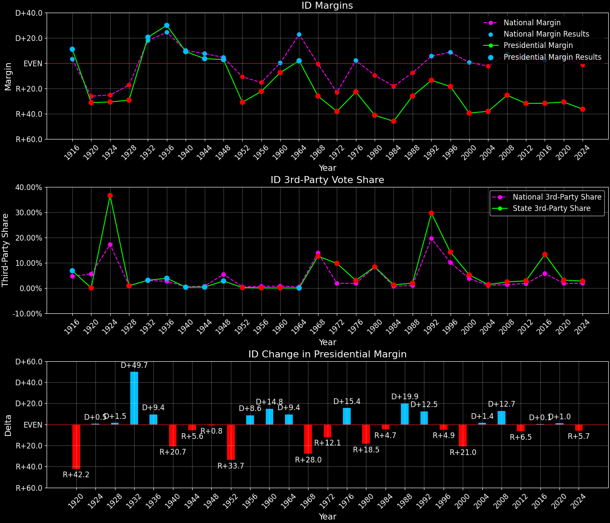

Idaho (ID) — Statewide

Margins · 3rd-Party share · Pres. deltas

Relative margins · Relative 3rd-Party · Rel. deltas
Idaho (ID) — Total Data
| Year | D | R | State Margin | Nat. Margin | Rel. Margin | Total votes | EVs |
|---|---|---|---|---|---|---|---|
| 1952 | 95,081(34.4%) | 180,707(65.4%) | R+31.0 | R+10.9 | R+20.1 | 276,231 | 4 |
| 1956 | 105,868(38.8%)(Δ 10,787) | 166,979(61.2%)(Δ -13,728) | R+22.4(Δ D+8.6) | R+15.4(Δ R+4.5) | R+7.0(Δ D+13.2) | 272,989(Δ -3,242) | 4 |
| 1960 | 138,853(46.2%)(Δ 32,985) | 161,597(53.8%)(Δ -5,382) | R+7.6(Δ D+14.8) | D+0.2(Δ D+15.6) | R+7.7(Δ R+0.7) | 300,450(Δ 27,461) | 4 |
| 1964 | 148,920(50.9%)(Δ 10,067) | 143,557(49.1%)(Δ -18,040) | D+1.8(Δ D+9.4) | D+22.6(Δ D+22.4) | R+20.7(Δ R+13.0) | 292,477(Δ -7,973) | 4 |
| 1968 | 89,273(30.7%)(Δ -59,647) | 165,369(56.8%)(Δ 21,812) | R+26.1(Δ R+28.0) | R+0.7(Δ R+23.3) | R+25.4(Δ R+4.7) | 291,183(Δ -1,294) | 4 |
| 1972 | 80,826(26.0%)(Δ -8,447) | 199,384(64.2%)(Δ 34,015) | R+38.2(Δ R+12.1) | R+23.1(Δ R+22.4) | R+15.1(Δ D+10.4) | 310,379(Δ 19,196) | 4 |
| 1976 | 126,549(37.1%)(Δ 45,723) | 204,151(59.9%)(Δ 4,767) | R+22.8(Δ D+15.4) | D+2.1(Δ D+25.2) | R+24.8(Δ R+9.8) | 340,932(Δ 30,553) | 4 |
| 1980 | 110,192(25.2%)(Δ -16,357) | 290,699(66.5%)(Δ 86,548) | R+41.3(Δ R+18.5) | R+9.7(Δ R+11.8) | R+31.5(Δ R+6.7) | 437,431(Δ 96,499) | 4 |
| 1984 | 108,510(26.4%)(Δ -1,682) | 297,523(72.4%)(Δ 6,824) | R+46.0(Δ R+4.7) | R+18.2(Δ R+8.5) | R+27.8(Δ D+3.8) | 411,144(Δ -26,287) | 4 |
| 1988 | 147,272(36.0%)(Δ 38,762) | 253,881(62.1%)(Δ -43,642) | R+26.1(Δ D+19.9) | R+7.7(Δ D+10.5) | R+18.3(Δ D+9.4) | 408,968(Δ -2,176) | 4 |
| 1992 | 137,013(28.4%)(Δ -10,259) | 202,645(42.0%)(Δ -51,236) | R+13.6(Δ D+12.5) | D+5.6(Δ D+13.3) | R+19.2(Δ R+0.8) | 482,142(Δ 73,174) | 4 |
| 1996 | 165,443(33.6%)(Δ 28,430) | 256,595(52.2%)(Δ 53,950) | R+18.5(Δ R+4.9) | D+8.5(Δ D+3.0) | R+27.1(Δ R+7.9) | 491,719(Δ 9,577) | 4 |
| 2000 | 138,637(27.6%)(Δ -26,806) | 336,937(67.2%)(Δ 80,342) | R+39.5(Δ R+21.0) | D+0.5(Δ R+8.0) | R+40.0(Δ R+13.0) | 501,621(Δ 9,902) | 4 |
| 2004 | 181,098(30.3%)(Δ 42,461) | 409,235(68.4%)(Δ 72,298) | R+38.1(Δ D+1.4) | R+2.5(Δ R+3.0) | R+35.7(Δ D+4.4) | 598,447(Δ 96,826) | 4 |
| 2008 | 236,440(36.1%)(Δ 55,342) | 403,012(61.5%)(Δ -6,223) | R+25.4(Δ D+12.7) | D+7.3(Δ D+9.7) | R+32.7(Δ D+3.0) | 655,122(Δ 56,675) | 4 |
| 2012 | 212,787(32.6%)(Δ -23,653) | 420,911(64.5%)(Δ 17,899) | R+31.9(Δ R+6.5) | D+3.9(Δ R+3.4) | R+35.8(Δ R+3.1) | 652,274(Δ -2,848) | 4 |
| 2016 | 189,765(27.5%)(Δ -23,022) | 409,055(59.3%)(Δ -11,856) | R+31.8(Δ D+0.1) | D+2.1(Δ R+1.8) | R+33.9(Δ D+1.9) | 690,255(Δ 37,981) | 4 |
| 2020 | 287,021(33.1%)(Δ 97,256) | 554,119(63.8%)(Δ 145,064) | R+30.8(Δ D+1.0) | D+4.5(Δ D+2.4) | R+35.2(Δ R+1.4) | 867,934(Δ 177,679) | 4 |
| 2024 | 274,972(30.4%)(Δ -12,049) | 605,246(66.9%)(Δ 51,127) | R+36.5(Δ R+5.7) | R+1.5(Δ R+5.9) | R+35.0(Δ D+0.2) | 905,057(Δ 37,123) | 4 |
Column explanations
- Δ
- Change (delta) in the value from the previous election year.
- Year
- Election year.
- D
- Number of votes for the Democratic candidate (raw count(pct%)).
- R
- Number of votes for the Republican candidate (raw count(pct%)).
- State Margin
- Margin between the two major-party candidates, including third-party votes ((D - R)/total).
- Nat. Margin
- The national presidential margin for that year, including third-party votes ((D_total - R_total)/total_votes).
- Rel. Margin
- The presidential margin relative to the national presidential margin (Margin - Nat. Margin).
- Total votes
- Total voter turnout or ballots cast (when provided).
- EVs
- Number of electoral votes allocated to this state or unit.
Idaho (ID) — Third-Party Data
| Year | D | R | Other votes | State 3rd-Party Share | 3rd-Party Nat. Share | 3rd-Party Rel. Share |
|---|---|---|---|---|---|---|
| 1952 | 95,081(34.4%) | 180,707(65.4%) | 443(0.2%) | 0.16% | 0.49% | -0.33% |
| 1956 | 105,868(38.8%)(Δ 10,787) | 166,979(61.2%)(Δ -13,728) | 142(0.1%) | 0.05% | 0.67% | -0.62% |
| 1960 | 138,853(46.2%)(Δ 32,985) | 161,597(53.8%)(Δ -5,382) | 0(0.0%) | 0.00% | 0.73% | -0.73% |
| 1964 | 148,920(50.9%)(Δ 10,067) | 143,557(49.1%)(Δ -18,040) | 0(0.0%) | 0.00% | 0.48% | -0.48% |
| 1968 | 89,273(30.7%)(Δ -59,647) | 165,369(56.8%)(Δ 21,812) | 36,541(12.5%) | 12.55% | 13.86% | -1.31% |
| 1972 | 80,826(26.0%)(Δ -8,447) | 199,384(64.2%)(Δ 34,015) | 30,169(9.7%) | 9.72% | 1.80% | 7.92% |
| 1976 | 126,549(37.1%)(Δ 45,723) | 204,151(59.9%)(Δ 4,767) | 10,232(3.0%) | 3.00% | 1.90% | 1.10% |
| 1980 | 110,192(25.2%)(Δ -16,357) | 290,699(66.5%)(Δ 86,548) | 36,540(8.4%) | 8.35% | 8.24% | 0.12% |
| 1984 | 108,510(26.4%)(Δ -1,682) | 297,523(72.4%)(Δ 6,824) | 5,111(1.2%) | 1.24% | 0.67% | 0.57% |
| 1988 | 147,272(36.0%)(Δ 38,762) | 253,881(62.1%)(Δ -43,642) | 7,815(1.9%) | 1.91% | 0.98% | 0.93% |
| 1992 | 137,013(28.4%)(Δ -10,259) | 202,645(42.0%)(Δ -51,236) | 142,484(29.6%) | 29.55% | 19.55% | 10.01% |
| 1996 | 165,443(33.6%)(Δ 28,430) | 256,595(52.2%)(Δ 53,950) | 69,681(14.2%) | 14.17% | 10.05% | 4.12% |
| 2000 | 138,637(27.6%)(Δ -26,806) | 336,937(67.2%)(Δ 80,342) | 26,047(5.2%) | 5.19% | 3.75% | 1.45% |
| 2004 | 181,098(30.3%)(Δ 42,461) | 409,235(68.4%)(Δ 72,298) | 8,114(1.4%) | 1.36% | 1.00% | 0.36% |
| 2008 | 236,440(36.1%)(Δ 55,342) | 403,012(61.5%)(Δ -6,223) | 15,670(2.4%) | 2.39% | 1.42% | 0.97% |
| 2012 | 212,787(32.6%)(Δ -23,653) | 420,911(64.5%)(Δ 17,899) | 18,576(2.8%) | 2.85% | 1.73% | 1.12% |
| 2016 | 189,765(27.5%)(Δ -23,022) | 409,055(59.3%)(Δ -11,856) | 91,435(13.2%) | 13.25% | 5.73% | 7.52% |
| 2020 | 287,021(33.1%)(Δ 97,256) | 554,119(63.8%)(Δ 145,064) | 26,794(3.1%) | 3.09% | 1.84% | 1.24% |
| 2024 | 274,972(30.4%)(Δ -12,049) | 605,246(66.9%)(Δ 51,127) | 24,839(2.7%) | 2.74% | 1.88% | 0.86% |
Column explanations
- Year
- Election year.
- D
- Number of votes for the Democratic candidate (raw count(pct%)).
- R
- Number of votes for the Republican candidate (raw count(pct%)).
- Other votes
- Number of votes for third-party (other) candidates (raw count(pct%)).
- State 3rd-Party Share
- Share of the vote received by third-party (other) candidates.
- 3rd-Party Nat. Share
- The national third-party share for that year (3rd-Party votes / total votes).
- 3rd-Party Rel. Share
- Third-party share relative to the national third-party share (3rd-Party share - Nat. 3rd-Party share).

Two-party margins · relative · deltas
Idaho (ID) — Two-Party Data
| Year | D | R | 2-Party Margin | 2-Party Nat. Margin | 2-Party Rel. Margin | EVs |
|---|---|---|---|---|---|---|
| 1952 | 95,081(34.5%) | 180,707(65.5%) | R+31.0 | R+10.9 | R+20.1 | 4 |
| 1956 | 105,868(38.8%)(Δ 10,787) | 166,979(61.2%)(Δ -13,728) | R+22.4(Δ D+8.7) | R+15.5(Δ R+4.6) | R+6.9(Δ D+13.2) | 4 |
| 1960 | 138,853(46.2%)(Δ 32,985) | 161,597(53.8%)(Δ -5,382) | R+7.6(Δ D+14.8) | D+0.2(Δ D+15.7) | R+7.7(Δ R+0.8) | 4 |
| 1964 | 148,920(50.9%)(Δ 10,067) | 143,557(49.1%)(Δ -18,040) | D+1.8(Δ D+9.4) | D+22.7(Δ D+22.5) | R+20.9(Δ R+13.1) | 4 |
| 1968 | 89,273(35.1%)(Δ -59,647) | 165,369(64.9%)(Δ 21,812) | R+29.9(Δ R+31.7) | R+0.8(Δ R+23.5) | R+29.1(Δ R+8.2) | 4 |
| 1972 | 80,826(28.8%)(Δ -8,447) | 199,384(71.2%)(Δ 34,015) | R+42.3(Δ R+12.4) | R+23.6(Δ R+22.8) | R+18.7(Δ D+10.3) | 4 |
| 1976 | 126,549(38.3%)(Δ 45,723) | 204,151(61.7%)(Δ 4,767) | R+23.5(Δ D+18.8) | D+2.1(Δ D+25.7) | R+25.6(Δ R+6.8) | 4 |
| 1980 | 110,192(27.5%)(Δ -16,357) | 290,699(72.5%)(Δ 86,548) | R+45.0(Δ R+21.6) | R+10.6(Δ R+12.7) | R+34.4(Δ R+8.8) | 4 |
| 1984 | 108,510(26.7%)(Δ -1,682) | 297,523(73.3%)(Δ 6,824) | R+46.6(Δ R+1.5) | R+18.3(Δ R+7.7) | R+28.2(Δ D+6.2) | 4 |
| 1988 | 147,272(36.7%)(Δ 38,762) | 253,881(63.3%)(Δ -43,642) | R+26.6(Δ D+20.0) | R+7.8(Δ D+10.5) | R+18.8(Δ D+9.4) | 4 |
| 1992 | 137,013(40.3%)(Δ -10,259) | 202,645(59.7%)(Δ -51,236) | R+19.3(Δ D+7.3) | D+6.9(Δ D+14.7) | R+26.2(Δ R+7.5) | 4 |
| 1996 | 165,443(39.2%)(Δ 28,430) | 256,595(60.8%)(Δ 53,950) | R+21.6(Δ R+2.3) | D+9.5(Δ D+2.6) | R+31.1(Δ R+4.8) | 4 |
| 2000 | 138,637(29.2%)(Δ -26,806) | 336,937(70.8%)(Δ 80,342) | R+41.7(Δ R+20.1) | D+0.5(Δ R+8.9) | R+42.2(Δ R+11.2) | 4 |
| 2004 | 181,098(30.7%)(Δ 42,461) | 409,235(69.3%)(Δ 72,298) | R+38.6(Δ D+3.1) | R+2.5(Δ R+3.0) | R+36.2(Δ D+6.1) | 4 |
| 2008 | 236,440(37.0%)(Δ 55,342) | 403,012(63.0%)(Δ -6,223) | R+26.0(Δ D+12.6) | D+7.4(Δ D+9.9) | R+33.4(Δ D+2.7) | 4 |
| 2012 | 212,787(33.6%)(Δ -23,653) | 420,911(66.4%)(Δ 17,899) | R+32.8(Δ R+6.8) | D+3.9(Δ R+3.4) | R+36.8(Δ R+3.3) | 4 |
| 2016 | 189,765(31.7%)(Δ -23,022) | 409,055(68.3%)(Δ -11,856) | R+36.6(Δ R+3.8) | D+2.2(Δ R+1.7) | R+38.8(Δ R+2.1) | 4 |
| 2020 | 287,021(34.1%)(Δ 97,256) | 554,119(65.9%)(Δ 145,064) | R+31.8(Δ D+4.9) | D+4.5(Δ D+2.3) | R+36.3(Δ D+2.6) | 4 |
| 2024 | 274,972(31.2%)(Δ -12,049) | 605,246(68.8%)(Δ 51,127) | R+37.5(Δ R+5.8) | R+1.5(Δ R+6.0) | R+36.0(Δ D+0.3) | 4 |
Column explanations
- Δ
- Change (delta) in the value from the previous election year.
- Year
- Election year.
- D
- Number of votes for the Democratic candidate (raw count(pct%)).
- R
- Number of votes for the Republican candidate (raw count(pct%)).
- 2-Party Margin
- Margin between the two major-party candidates, ignoring third-party votes ((D - R)/(D + R)).
- 2-Party Nat. Margin
- The national presidential margin for that year, including third-party votes ((D_total - R_total)/total_votes).
- 2-Party Rel. Margin
- The presidential margin relative to the national presidential margin (Margin - Nat. Margin).
- EVs
- Number of electoral votes allocated to this state or unit.